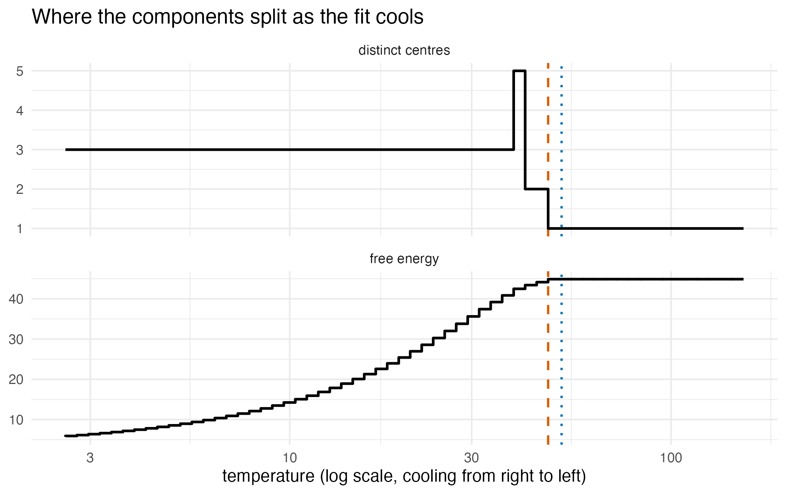

has_ggplot2 <- requireNamespace("ggplot2", quietly = TRUE)The problem
A fitted mixture is a list of weights, means and covariance matrices. From the list alone it is hard to tell how spread out the distribution is, how far it is from another fit, how many components the data support, or which variables depend on each other. Information theory has a measure for each of these questions. Entropy measures spread. Mutual information measures the dependence between variables and is zero when they are independent. A divergence measures how different two distributions are and is zero when they are equal. For a mixture of normal distributions, some of these measures have exact formulas and others must be estimated by simulation.
Package capabilities
-
gmm_entropy()returns the Rényi entropy of order 2, a variant of entropy that has an exact formula for mixtures. Withorder = "shannon"it returns a simulation estimate of the Shannon entropy, with its standard error and an exact upper bound. -
gmm_divergence()returns the exact Cauchy-Schwarz divergence between two mixtures. Withtype = "kl"it returns a simulation estimate of the Kullback-Leibler divergence computed bygmm_kld(). -
gmm_mutual_information()measures the dependence between two groups of variables.gmm_conditional_entropy()returns the entropy of one variable when the others are held at given values. -
gmm_anneal_path()fits mixtures while a “temperature” is lowered, and records where the components split apart. Withanneal = TRUE,fit_em_samples()andfit_kld_em()use this cooling to start a fit. -
bic_aic()reports the integrated completed likelihood (ICL) beside the BIC and AIC. -
gmm_independence_graph()shows which pairs of variables remain related once all the other variables are taken into account. -
maxent_target()builds the most spread-out density that meets given constraints.
Addressing the problem
set.seed(20260618)Why some quantities are exact
The Shannon entropy of a density is the average of over draws from . The Rényi-2 entropy is . Both are measured in nats, the unit of natural logarithms. Write for the normal density with mean and covariance matrix . The integral of a product of two normal densities has an exact value: . The square of a mixture, or the product of two mixtures, is a sum of such products, and its integral is therefore exact too. The Rényi-2 entropy, the Cauchy-Schwarz divergence and the Cauchy-Schwarz mutual information are built from these integrals. The Shannon entropy needs the logarithm of a sum of densities, which has no exact formula.
Entropy of a mixture
The code below builds a mixture of two normal distributions with centres 4 apart, and a single normal distribution with correlation 0.3. For a single normal distribution in variables with covariance matrix , the Rényi-2 entropy is , an independent check on the package.
g <- gmm(
weights = c(0.5, 0.5),
means = list(c(-2, 0), c(2, 0)),
covariances = list(diag(2), diag(2))
)
h2_mixture <- gmm_entropy(g)
sigma_one <- matrix(c(1, 0.3, 0.3, 1), 2L, 2L)
one <- gmm(weights = 1, means = list(c(0, 0)), covariances = list(sigma_one))
h2_closed <- gmm_entropy(one)
h2_analytic <- 0.5 * (2 * log(4 * pi) +
as.numeric(determinant(sigma_one, logarithm = TRUE)$modulus))
h2_gap <- abs(h2_closed - h2_analytic)
sh <- gmm_entropy(g, order = "shannon", n_mc = 5000L, seed = 1L)
sh_slack <- sh$upper_bound - sh$mc
sh_slack_se <- sh_slack / sh$mc_se| Quantity | Value (nats) |
|---|---|
| Rényi-2, two-component mixture | 3.2060 |
| Rényi-2, single normal, from the package | 2.4839 |
| Rényi-2, single normal, from the formula | 2.4839 |
| Shannon, two-component mixture, simulation estimate | 3.4779 |
| Shannon, standard error of the estimate | 0.0134 |
| Shannon, exact upper bound | 3.5310 |
Distance between two mixtures
The Cauchy-Schwarz divergence is symmetric, and zero only when the
two mixtures are equal. The Kullback-Leibler divergence is not symmetric
and has no exact formula for mixtures. With type = "kl",
gmm_divergence() returns a simulation estimate and the
approximation of Hershey and Olsen (2007), which needs no
simulation.
q <- gmm(
weights = 1, means = list(c(0, 0)), covariances = list(diag(2) * 2)
)
d_cs <- gmm_divergence(g, q)
d_self <- gmm_divergence(g, g)
d_kl <- gmm_divergence(g, q, type = "kl", n_mc = 2000L)| Quantity | Value (nats) |
|---|---|
| Cauchy-Schwarz, g against q | 0.3881 |
| Cauchy-Schwarz, g against itself | 0.0000 |
| Kullback-Leibler, simulation estimate | 0.5703 |
| Kullback-Leibler, standard error of the estimate | 0.0218 |
| Kullback-Leibler, Hershey-Olsen approximation | 0.5003 |
Dependence between variables
The Cauchy-Schwarz mutual information compares the joint distribution
with the distribution the variables would have if they were independent.
Here the conditional entropy of
at a value of
is the Rényi-2 entropy of
when
is held at that value. It is computed at each value separately, not
averaged over
.
gmm_conditional_entropy() takes one row per value, with
NA marking the free variable.
sigma_joint <- matrix(c(1, 0.7, 0.7, 1), 2L, 2L)
joint <- gmm(
weights = 1, means = list(c(0, 0)), covariances = list(sigma_joint)
)
mi <- gmm_mutual_information(joint, 1L, 2L)
independent <- gmm(
weights = 1, means = list(c(0, 0)), covariances = list(diag(2))
)
mi_independent <- gmm_mutual_information(independent, 1L, 2L)
given_grid <- rbind(c(NA, 0), c(NA, 1), c(NA, 2))
h_cond <- gmm_conditional_entropy(joint, given = given_grid)| Quantity | Value (nats) |
|---|---|
| mutual information, correlation 0.7 | 0.1030 |
| mutual information, independent variables | 0.0000 |
| conditional entropy of at | 0.9288 |
| conditional entropy of at | 0.9288 |
| conditional entropy of at | 0.9288 |
Cooling the fit
The EM algorithm, the usual fitting method for a mixture, repeats two
steps: it shares each data point among the components, then refits each
component to its share. Deterministic annealing (Rose, 1998) softens the
shares with a temperature
:
point
goes to component
in proportion to
,
where
is the weight of the component. At a high temperature every component
sits at the mean of the data. As
falls towards one, the components split apart at critical temperatures.
The quantity minimised is the free energy
,
where
is the average of
over the shares.
is the entropy of the shares relative to the component weights,
,
where
is the share of point
given to component
.
It is zero when every point is shared in proportion to the weights. With
anneal = TRUE, fit_em_samples() and
fit_kld_em() cool first and start the usual fit from the
result. The data below are three far-apart clusters of 100 points
each.
x_three <- rbind(
matrix(rnorm(200L), ncol = 2L) +
matrix(rep(c(-7, -7), each = 100L), ncol = 2L),
matrix(rnorm(200L), ncol = 2L) +
matrix(rep(c(7, -7), each = 100L), ncol = 2L),
matrix(rnorm(200L), ncol = 2L) +
matrix(rep(c(0, 8), each = 100L), ncol = 2L)
)
tgt_three <- gmm_target_from_samples(x_three)
fit_annealed <- fit_em_samples(tgt_three, N = 3L, anneal = TRUE, seed = 1L)
fit_annealed@diagnostics$annealed
#> [1] TRUEgmm_anneal_path() counts the distinct component centres
at each temperature. It returns the count that held for the largest
number of cooling steps, which are evenly spaced in log temperature. The
temperature of the first split can be computed from the covariance
matrix of the data,
.
It is
,
the largest eigenvalue of
,
where
is the covariance matrix of every component during cooling. With the
default
,
is the largest eigenvalue of
,
which is the variance of the data along the direction in which they are
most spread out.
path <- gmm_anneal_path(x_three, k_max = 6L, n_steps = 60L, seed = 1L)
k_found <- path$k_selected
t_empirical <- path$first_critical_temperature
t_analytic <- path$t_critical_analytic| Quantity | Value |
|---|---|
| components found | 3 |
| first critical temperature, recorded | 47.60 |
| first critical temperature, exact | 51.62 |
| cooling steps | 60 |
anneal_df <- rbind(
data.frame(
temperature = path$path$temperature,
value = path$path$n_effective,
panel = "distinct centres"
),
data.frame(
temperature = path$path$temperature,
value = path$path$free_energy,
panel = "free energy"
)
)
ggplot2::ggplot(anneal_df, ggplot2::aes(temperature, value)) +
ggplot2::geom_vline(
xintercept = t_analytic, linetype = "dotted",
colour = "#0072B2", linewidth = 0.7
) +
ggplot2::geom_vline(
xintercept = t_empirical, linetype = "dashed",
colour = "#D55E00", linewidth = 0.7
) +
# a count recorded at one temperature holds until the next, cooler step
ggplot2::geom_step(direction = "vh", linewidth = 0.8,
colour = "#000000") +
ggplot2::facet_wrap(~ panel, ncol = 1L, scales = "free_y") +
ggplot2::scale_x_log10() +
ggplot2::labs(
x = "temperature (log scale, cooling from right to left)",
y = NULL,
title = "Where the components split as the fit cools"
) +
ggplot2::theme_minimal(base_size = 11)
Cooling on three well-separated clusters. Upper panel: the number of distinct component centres at each temperature. Lower panel: the free energy. The dashed line marks the temperature at which the first split was recorded, the dotted line the exact critical temperature.
Maximum-entropy targets
Among all densities that meet a set of constraints, the one with the
largest entropy assumes nothing beyond them (Jaynes, 1957).
maxent_target() builds it. For a given mean and covariance
matrix it is the normal distribution, for a given range alone the
uniform, and for a mean and covariance matrix on a bounded box a
truncated normal. A bounded target records its range. When such a target
is fitted from its formula alone (regime = "kld", van der
Hoek and Elliott, 2024), the trial points that the fit weights are drawn
from within that range.
me_gauss <- maxent_target(moments = list(mean = c(0, 0), cov = diag(2)))
me_unif <- maxent_target(support = list(lower = c(0, 0), upper = c(1, 1)))
unif_density <- exp(me_unif@log_density(matrix(c(0.5, 0.5), nrow = 1L)))
gauss_density <- exp(me_gauss@log_density(matrix(c(0, 0), nrow = 1L)))| Constraint | Family returned | Density at the centre |
|---|---|---|
| mean and covariance matrix | maxent_gaussian | 0.159 |
| the unit square as range | maxent_uniform | 1.000 |
Choosing the number of components
The BIC (Bayesian information criterion) and the AIC (Akaike
information criterion, with a lighter penalty) balance how well a
mixture fits against its number of parameters. In
bic_aic(), smaller is better. The ICL (Biernacki et al.,
2000) adds a penalty for overlap,
with
,
where
is the share of point
given to component
.
is zero when every point belongs clearly to one component and grows with
overlap. The ICL equals the BIC for one component, is never smaller than
the BIC, and favours well-separated components.
x_two <- rbind(
matrix(rnorm(200L, -4), ncol = 2L),
matrix(rnorm(200L, 4), ncol = 2L)
)
fit_two <- fit_em_samples(gmm_target_from_samples(x_two), N = 2L, seed = 1L)
crit <- bic_aic(fit_two)| Criterion | Value |
|---|---|
| BIC | 1492.24 |
| AIC | 1455.95 |
| ICL | 1492.24 |
| free parameters | 11 |
Which variables are related
The partial correlation of two variables is their correlation after
the linear effect of all the other variables is removed.
gmm_independence_graph() computes it for every pair from
the overall covariance matrix of the mixture, which is exact, and draws
an edge where it is judged non-zero. For a mixture fitted to data, each
pair is tested at level alpha (default 0.05) with Fisher’s
test, a standard test of whether a correlation is zero. For a mixture
with no data behind it, an edge is drawn where the partial correlation
exceeds 0.05 in size. The first example is a normal distribution in four
variables whose inverse covariance matrix links each variable only to
its neighbours. Its graph should be the chain
.
omega <- diag(4L)
for (i1 in seq_len(3L)) {
omega[i1, i1 + 1L] <- -0.5
omega[i1 + 1L, i1] <- -0.5
} # ends i1, over the off-diagonal band of the chain precision
g_chain <- gmm(
weights = 1, means = list(rep(0, 4L)), covariances = list(solve(omega))
)
adj_chain <- gmm_independence_graph(g_chain)
edges_chain <- sum(adj_chain) / 2L| x1 | x2 | x3 | x4 | |
|---|---|---|---|---|
| x1 | 0 | 1 | 0 | 0 |
| x2 | 1 | 0 | 1 | 0 |
| x3 | 0 | 1 | 0 | 1 |
| x4 | 0 | 0 | 1 | 0 |
The second example is a density in three variables known only by its formula. Its log density is minus the energy below, which links with and with but has no term in . Given , the variables and are independent, and the graph of the target is the chain .
energy <- function(x_mat) {
x_mat <- matrix(x_mat, ncol = 3L)
rowSums((x_mat^2 - 1)^2) -
0.7 * (x_mat[, 1L] * x_mat[, 2L] + x_mat[, 2L] * x_mat[, 3L])
}
field <- gmm_target(n_dim = 3L, log_density = function(x_mat) -energy(x_mat))
fit_field <- fit_kld_em(
field,
N = 8L,
proposal = proposal_uniform(3L, -3, 3),
is_size = 6000L,
anneal = TRUE,
seed = 1L,
support_warn = FALSE
)
adj_field <- gmm_independence_graph(fit_field)
edges_field <- sum(adj_field) / 2L| x1 | x2 | x3 | |
|---|---|---|---|
| x1 | 0 | 1 | 1 |
| x2 | 1 | 0 | 1 |
| x3 | 1 | 1 | 0 |
Comparison with FNN, mclust and pcalg
The FNN package estimates the Shannon entropy from the distances
between each data point and its nearest neighbours (Kozachenko and
Leonenko, 1987). Its mutinfo() estimates the mutual
information in the same way (Kraskov et al., 2004). Neither estimator
fits a model. In a simulation, 200 datasets of 500 rows were drawn from
each of two mixtures with known entropy. One has three overlapping
components in two variables. The other has two components in four
variables, and its mutual information is between the first two variables
and the last two. proxymix was given the true number of components,
which FNN does not need, and used 5000 simulation draws. FNN used 10
neighbours. The true values came from numerical integration of the true
density. The measure is the mean absolute error, and smaller is
better.
| Design | Shannon quantity | True value | Error, proxymix | Error, FNN | Difference (standard error) |
|---|---|---|---|---|---|
| three components, 2 variables | entropy | 3.533 | 0.039 | 0.056 | -0.017 (0.002) |
| two components, 4 variables | entropy | 6.230 | 0.066 | 0.074 | -0.009 (0.002) |
| three components, 2 variables | mutual information | 0.381 | 0.026 | 0.035 | -0.008 (0.001) |
| two components, 4 variables | mutual information | 0.396 | 0.028 | 0.031 | -0.003 (0.002) |
proxymix had the smaller error for the entropy in both designs and for the mutual information with two variables. The difference was 8.2 standard errors for the entropy with two variables, 4.0 for the entropy with four variables, and 5.6 for the mutual information with two variables. With four variables, the difference in mutual information is 1.3 standard errors, too small to separate the two methods.
Where the same simulation chose the number of components or recovered
a graph, other packages did better. With three overlapping components,
the BIC of the mclust package (Scrucca et al., 2016) chose the true
count in 100 per cent of datasets and proxymix’s BIC in 97 per cent.
Both ICLs mostly chose two components, and found the true count in 32
per cent of datasets for mclust and 2 per cent for proxymix. With two
components in four variables, mclust’s ICL found the true count in 100
per cent of datasets and proxymix’s in 83 per cent. On a six-variable
chain with two components, the PC algorithm of the pcalg package
(Kalisch et al., 2012), which removes edges by repeated tests of partial
correlations, was run at level 0.01 and recovered the graph exactly in
93.5 per cent of datasets. gmm_independence_graph(), at
level 0.05 per pair, did so in 63 per cent. The chain leaves 10 pairs
without an edge. Were their tests independent, all 10 would be left out
at level 0.05 with probability 0.60, close to proxymix’s 63 per cent, so
most of the gap comes from the looser level.
proxymix was slower than FNN and pcalg. On one dataset of 500 rows, the FNN estimates took 0.002 seconds and the proxymix fit with its estimates 0.029 seconds. The PC algorithm took 0.002 seconds and proxymix 0.165. proxymix’s five fits for the component count took 0.171 seconds and mclust’s ICL 0.318 (median of five runs on one computer).
The code below runs the three competitors and the proxymix estimates on one dataset from each design.
library(proxymix)
library(FNN)
library(mclust)
library(pcalg)
# one dataset of 500 rows from the design with three overlapping components
w <- c(0.4, 0.35, 0.25)
mu <- list(c(-2, 0), c(2, 1), c(0, 3))
sig <- list(matrix(c(1, 0.5, 0.5, 1), 2L),
matrix(c(1.5, -0.6, -0.6, 0.8), 2L),
diag(c(0.5, 1.2)))
set.seed(1L)
z <- sample.int(3L, 500L, replace = TRUE, prob = w)
x <- matrix(rnorm(500L * 2L), 500L, 2L)
for (k in 1:3) {
x[z == k, ] <- x[z == k, , drop = FALSE] %*% chol(sig[[k]]) +
matrix(mu[[k]], sum(z == k), 2L, byrow = TRUE)
}
# Shannon entropy and mutual information by nearest neighbours
entropy(x, k = 10L)[10L]
mutinfo(x[, 1L, drop = FALSE], x[, 2L, drop = FALSE], k = 10L)
# the same two quantities from a fitted three-component mixture
fit <- fit_em_samples(gmm_target_from_samples(x), N = 3L, seed = 1L)
h_mc <- function(g) {
gmm_entropy(g, order = "shannon", n_mc = 5000L, seed = 1L)$mc
}
h_mc(fit)
h_mc(gmm_marginalise(fit, 1L)) + h_mc(gmm_marginalise(fit, 2L)) - h_mc(fit)
# number of components by mclust's BIC and ICL, one to five offered
Mclust(x, G = 1:5, verbose = FALSE)$G
icl_m <- mclustICL(x, G = 1:5, verbose = FALSE)
which(icl_m == max(icl_m, na.rm = TRUE), arr.ind = TRUE)[1L]
# one dataset from the graph design: a six-variable chain, two components
omega <- diag(6L)
omega[abs(row(omega) - col(omega)) == 1L] <- -0.4
set.seed(1L)
z_g <- sample.int(2L, 500L, replace = TRUE, prob = c(0.5, 0.5))
x_g <- matrix(rnorm(500L * 6L), 500L, 6L) %*% chol(solve(omega))
x_g[z_g == 2L, 1L] <- x_g[z_g == 2L, 1L] + 4
# the graph by the PC algorithm, and by proxymix
pc_fit <- pc(suffStat = list(C = cor(x_g), n = nrow(x_g)),
indepTest = gaussCItest, alpha = 0.01, p = ncol(x_g))
adj <- as(pc_fit@graph, "matrix")
((adj + t(adj)) > 0) * 1L
sel <- select_N(gmm_target_from_samples(x_g), candidates = 1:4, seed = 1L)
gmm_independence_graph(sel$best_fit)It needs FNN and mclust from CRAN, and pcalg, which needs graph and RBGL from Bioconductor. It is not run when this vignette is built.
install.packages(c("FNN", "mclust", "BiocManager"))
BiocManager::install(c("graph", "RBGL"))
install.packages("pcalg")The extended version of this article gives the full code and results of this comparison, adds the graphical lasso and the huge package to the graph comparison, and applies each method to the Palmer penguins data.
Interpretation
The Rényi-2 entropy of the single normal distribution matches the formula to machine precision. The mixture’s Rényi-2 entropy is higher, 3.206 nats against 2.484, because its mass is spread over two centres. Its Shannon entropy is estimated at 3.478 nats, and the exact upper bound lies 4.0 standard errors above the estimate.
The Cauchy-Schwarz divergence of from itself is 0, as the definition requires. The Kullback-Leibler estimate of 0.570 nats has a standard error of 0.022, and the Hershey-Olsen approximation is 0.500. The Cauchy-Schwarz and Kullback-Leibler divergences are on different scales. To compare several fits, use the same divergence for all of them.
The mutual information is zero for independent variables, as it should be. The conditional entropy is 0.9288 nats at all three values of . For a single normal distribution the spread of given does not depend on , but for a mixture of several components it can.
Cooling found 3 components, the number of clusters in the data. The first split was recorded at temperature 47.6, against the exact 51.6. A split is recorded only on the grid of 60 steps and once two centres are clearly apart, so the recorded value lags the exact one. The free energy is flat while all centres sit at the mean of the data, and falls as they move apart.
maxent_target() returned the normal family, with density
0.159
at its mean, and the uniform family on the unit square, with density
1.000.
For two well-separated clusters the ICL equals the BIC to the precision shown, because is only . With overlapping components the ICL favours fewer of them. In the comparison, proxymix’s ICL chose two components in 98 per cent of the datasets drawn with three overlapping components.
The graph of the four-variable chain has 3 edges and is the chain.
The graph of the density fitted from its formula has 3 edges and is not
the chain of the target. The fitted mixture puts the partial correlation
of
and
at 0.069, above the threshold of 0.05. The target’s own partial
correlation, computed by summation over a fine grid, is 0.0009.
According to gmm_fit_quality(), the fit converged, is not
degenerate, and has a KL divergence of 0.224 nats, measured on fresh
draws that the fit did not use. The package flags a fit that did not
converge, is degenerate, or has a KL divergence above 0.3 on fresh
draws. This fit is not flagged.
Refitted with seeds 1 to 10 and 6000 trial points each, the mixture recovered the chain in 9 of 10 fits, and with 12000 trial points in 10 of 10. The flag was raised on 2 of the fits with 6000 points and 1 of those with 12000. Each flagged fit reached its round limit without converging. None was degenerate or had a KL divergence above 0.3 on fresh draws. Every flagged fit recovered the chain. The one fit that missed the chain was not flagged. The flag describes the fit, not the graph read from it. To check a graph, refit with more trial points and see whether it stays the same.
Limitations
The Rényi-2 entropy and the Cauchy-Schwarz divergence are exact and cheap, about normal-density evaluations for components. They are the natural defaults for the spread of a fit and the difference between two fits. The Shannon entropy and the Kullback-Leibler divergence are simulation estimates. Read them against their standard errors, and use them when your analysis calls for those particular definitions.
The independence graph shows which variables are related, not which
causes which, and has no edge directions. It uses only the covariance
matrix, so it misses dependence that leaves the covariance unchanged.
Fisher’s
test assumes normally distributed data. The level, or the threshold, is
a choice, and a different choice can give a different graph. Testing
each pair at 0.05 lets false edges add up. The six-variable chain has 10
pairs without an edge, and 10 independent tests at 0.05 would give at
least one false edge with probability 0.40.
alpha = 0.05 / choose(p, 2) for
variables keeps that probability below 0.05.
Cooling found the right count on well-separated clusters, where other methods also succeed. On overlapping clusters the staircase is hard to read, and the count held over the most cooling steps can be one that no criterion supports. The exact critical temperature applies only to the first split. The ICL ranks the counts that were fitted but gives no test of the winner. It undercounts overlapping components, and mclust’s ICL did better than proxymix’s in the comparison.
Every number here is read from a mixture already fitted. None of
these numbers shows whether the mixture is a good proxy for its target.
Check that with gmm_fit_quality() first. An entropy
computed on a poor fit can be precise and still wrong.
Further reading
How well a mixture proxies four awkward shapes applies the
fit-quality checks of gmm_fit_quality() to several target
shapes.
Choosing between the three fitting regimes explains the difference between fitting from data and fitting from a formula alone.
Conditioning and the other exact operations on a fitted mixture are in The closed-form operator calculus on a mixture.
For a first fit from a formula, the method used for the three-variable density above, start with Fitting a proxy to a density you cannot sample.
References
Biernacki, C., Celeux, G. and Govaert, G. (2000). Assessing a mixture model for clustering with the integrated completed likelihood. IEEE Transactions on Pattern Analysis and Machine Intelligence 22(7), 719–725. https://doi.org/10.1109/34.865189.
Hershey, J. R. and Olsen, P. A. (2007). Approximating the Kullback Leibler divergence between Gaussian mixture models. 2007 IEEE International Conference on Acoustics, Speech and Signal Processing (ICASSP ’07), IV-317–IV-320. https://doi.org/10.1109/ICASSP.2007.366913.
Hoek, J. van der and Elliott, R. J. (2024). Mixtures of multivariate Gaussians. Stochastic Analysis and Applications. https://doi.org/10.1080/07362994.2024.2372605.
Jaynes, E. T. (1957). Information theory and statistical mechanics. Physical Review 106(4), 620–630. https://doi.org/10.1103/PhysRev.106.620.
Kalisch, M., Mächler, M., Colombo, D., Maathuis, M. H. and Bühlmann, P. (2012). Causal inference using graphical models with the R package pcalg. Journal of Statistical Software 47(11), 1–26. https://doi.org/10.18637/jss.v047.i11.
Kozachenko, L. F. and Leonenko, N. N. (1987). Sample estimate of the entropy of a random vector. Problems of Information Transmission 23(2), 95–101.
Kraskov, A., Stögbauer, H. and Grassberger, P. (2004). Estimating mutual information. Physical Review E 69(6), 066138. https://doi.org/10.1103/PhysRevE.69.066138.
Rose, K. (1998). Deterministic annealing for clustering, compression, classification, regression, and related optimization problems. Proceedings of the IEEE 86(11), 2210–2239. https://doi.org/10.1109/5.726788.
Scrucca, L., Fop, M., Murphy, T. B. and Raftery, A. E. (2016). mclust 5: Clustering, classification and density estimation using Gaussian finite mixture models. The R Journal 8(1), 289–317. https://doi.org/10.32614/RJ-2016-021.
Reproduce
The vignette sets set.seed(20260618) once, and the
simulated data are drawn from that stream. Every call that draws its own
random numbers and has a seed argument is given one.
gmm_divergence(type = "kl") has no seed
argument and uses the stream that set.seed() started. The
comparison and the refits over 10 seeds read stored results, run under
proxymix 0.16.0 on 26 September 2026.
#> R version 4.6.1 (2026-06-24)
#> Platform: aarch64-apple-darwin23
#> Running under: macOS Tahoe 26.6.2
#>
#> Matrix products: default
#> BLAS: /Library/Frameworks/R.framework/Versions/4.6/Resources/lib/libRblas.0.dylib
#> LAPACK: /Library/Frameworks/R.framework/Versions/4.6/Resources/lib/libRlapack.dylib; LAPACK version 3.12.1
#>
#> locale:
#> [1] en_AU.UTF-8/en_AU.UTF-8/en_AU.UTF-8/C/en_AU.UTF-8/en_AU.UTF-8
#>
#> time zone: Australia/Adelaide
#> tzcode source: internal
#>
#> attached base packages:
#> [1] stats graphics grDevices utils datasets methods base
#>
#> other attached packages:
#> [1] proxymix_0.16.0
#>
#> loaded via a namespace (and not attached):
#> [1] mvnfast_0.2.8 gtable_0.3.6 jsonlite_2.0.0 dplyr_1.2.1
#> [5] compiler_4.6.1 Rcpp_1.1.2 tidyselect_1.2.1 dichromat_2.0-1
#> [9] jquerylib_0.1.4 systemfonts_1.3.2 scales_1.4.0 textshaping_1.0.5
#> [13] yaml_2.3.12 fastmap_1.2.0 ggplot2_4.0.3 R6_2.6.1
#> [17] labeling_0.4.3 generics_0.1.4 knitr_1.51 htmlwidgets_1.6.4
#> [21] tibble_3.3.1 desc_1.4.3 bslib_0.12.0 pillar_1.11.1
#> [25] RColorBrewer_1.1-3 rlang_1.3.0 cachem_1.1.0 xfun_0.60
#> [29] fs_2.1.0 sass_0.4.10 S7_0.2.2 otel_0.2.0
#> [33] cli_3.6.6 withr_3.0.3 pkgdown_2.2.1 magrittr_2.0.5
#> [37] digest_0.6.39 grid_4.6.1 lifecycle_1.0.5 vctrs_0.7.3
#> [41] evaluate_1.0.5 glue_1.8.1 farver_2.1.2 ragg_1.5.2
#> [45] rmarkdown_2.32 tools_4.6.1 pkgconfig_2.0.3 htmltools_0.5.9